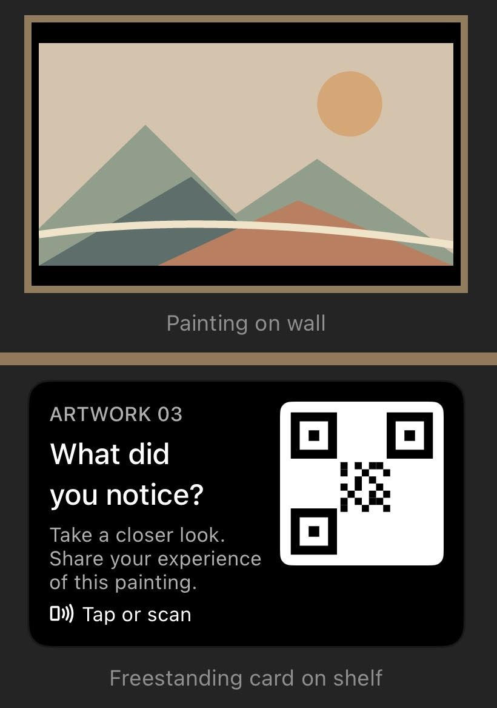

Yard AERS

Playing vinyl outside at the Yard.
The project runs at The Yard Coffee, a specialty café that roasts its coffee on site and hosts community events.
Beside a painting, a card asks: “What did you notice? Take a closer look. Share your experience of this painting.” Visitors tap or scan it and answer a short survey about the art they just spent time with. The survey uses the Art Engagement Reflection Scale (AERS; Rodriguez-Boerwinkle, Ivcevic, & Tinio, 2026), which measures how deeply someone engaged with a specific artwork.

How a card sits with a painting: the painting on the wall, the card on a shelf below it.
The codes sit in a few places: a cube, a 5×7 card, and the tables. Each placement is tagged, so I can see where people scan, and whether they finish the survey once they start.